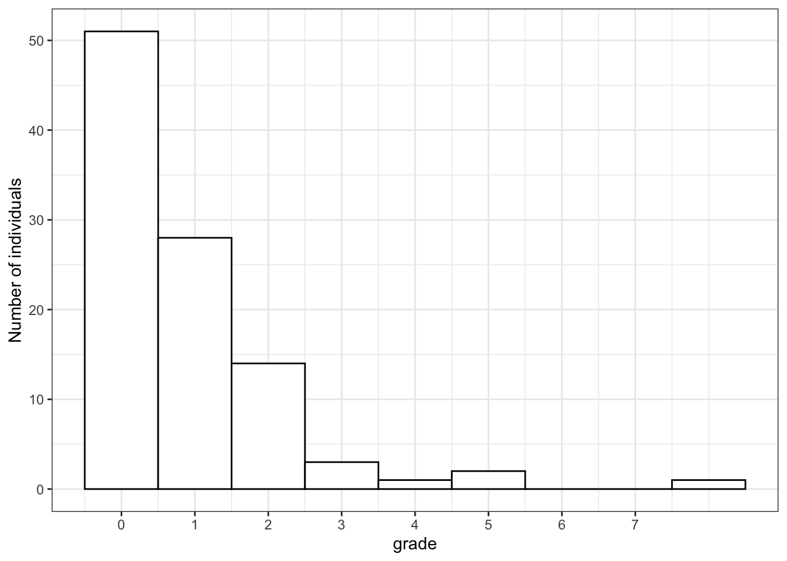

4 Biased transmission (indirect bias: model)
In the two previous chapters, we started to examine biased transmission, both based on the characteristics of the traits (or direct bias) and on the characteristics of the population. The latter can result from taking into account the frequency of a trait (as we did for conformity) or from taking into account specific features of the demonstrators, or model bias, which we will look at in this chapter.
Whereas the simulations we realised previously are fairly standard, indirect, model-based, biased transmission can be implemented in several different ways. Model biases can result when individuals copy preferentially from any features of the demonstrators, as long as it is not directly tied to the traits. The most studied model bias is prestige bias, where individuals are more likely to copy from demonstrators that are considered more ‘prestigious’, for example because other individuals show deference to them. Alternatively, individuals can copy the demonstrators that are more successful, independently from how others judge them, or they can copy individuals that are more similar to them, or older (or younger), and so on. The crux is that the decision is not directly linked to the cultural trait itself.
4.1 A generic model bias
To implement a generic version of model-biased cultural transmission, we first need to assume that there are some intrinsic differences in the population. Up until now, our populations were described only by the traits they possessed. We now want that each individuals have some feature by which can be distinguished from others, and classified at a particular level with respect of all others. We can call thes feature ‘grade’. An individual’s grade could stand for their prestige, their age (assuming that the time frame of the simulations is sufficienlty short) or any other features that do not change, and that other individuals can use to decide whether to copy from them or not. How can we implement it? Again, there is not a standard way. We can assume that grade is distributed exponentially among individuals, meaning that few of them have an high grade, and the majority have a lower one (this may be similar to how prestige is distributed in human societies).
library(tidyverse)
set.seed(111)
N <- 100
p_0 <- 0.5
population <- tibble(trait = sample(c("A", "B"), N, replace = TRUE, prob = c(p_0, 1 - p_0)),
grade = rexp(N)) The only difference in the initialisation of the population is that we have now another variable, \(grade\), where the function rexp() draws \(N\) random numbers from an exponential distribution. We can inspect the tibble by typing its name in the R console
population## # A tibble: 100 x 2
## trait grade
## <chr> <dbl>
## 1 A 0.152
## 2 A 1.48
## 3 B 0.122
## 4 A 4.71
## 5 B 0.280
## 6 B 0.761
## 7 B 0.139
## 8 A 0.138
## 9 B 0.672
## 10 B 0.456
## # … with 90 more rowsIndividual 4 has a grade of \(4.71\), higher comparing to the others, so can be one of the individuals that will be likely to be copied from. We can plot an histogram of all grades to have a better grasp of the situation, using the new geom_histogram() ggplot geom (Notice the parameter binwidth = 1 that specifies the width of the bins, and scale_x_continuous(breaks = 0 : max(population$grade)) which tells ggplot to use breaks of size 1, starting from 0).
ggplot(data = population, aes(x = grade)) +
geom_histogram(binwidth = 1, fill = "white", colour = "black") +
scale_x_continuous(breaks = 0 : max(population$grade)) +
labs(y = "Number of individuals") +
theme_bw()
We can see that the majority of individuals has a grade between 0 and 1, and almost all of them have a grade below 3 (incidentally our individual 4 is not the highest grade in the population). Of course, other distributions are possible, you can experiment for example with rnorm(N), a normal distribution, that produces few high-grades and few low-grades individuals, and the majority of them close to the mean, or even runif(N), a uniform distribution, that produces an ‘egualitarian’ grade assignment.
How should ‘grade’ be used to decide whether to copy or not? Again, there are various possibilities.
previous_population <- population
demonstrator_population <- sample(previous_population, N, replace = TRUE)